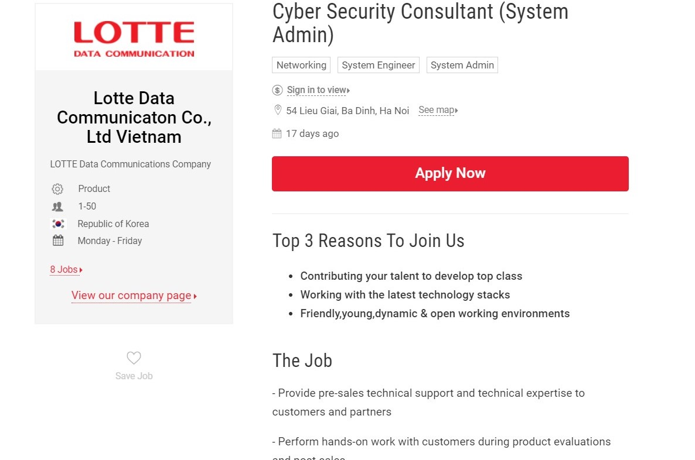

3. IDEAL JOB:
Actually, I have an interest in security. So I will choose software security or web security for my future career.
Link: https://itviec.com/it-jobs/cyber-security-consultant-system-admin-cong-ty-tnhh-truyen-so-lieu-lotte-viet-nam-2916

Description:
• The position of this job is system admin, so I could have more opportunities for promotion. Also, I really excited about the support of the company like Health and social insurance and PIT too.
In addition, the company will give the employees an exchange to Korea due to when enough seniority year. Moreover, LOTTE is a well-known and huge company, so I hope they will have many good services for their employees and a high salary as well.
• The position requires:
o Bachelor’s degree in Criminal Science, Computer Science, Security or similar.
o 5 years ‘experience in security systems.
o Proficiency in technologies like routing/switching, SSL, WAN optimization, Web Security, load balancers, Traffic shaping or gateway AV, OTP, and DLP.
o Outstanding computer and IT skills.
o Excellent documentation skills in English with a meticulous working for details and good at 4 English skills.
o Soft-spoken with good interpersonal and presentation skills along with excellent client relationship management skills.
My current skills:
Up to now, I just have little knowledge about security systems and some general information about IT. I’ve never joined in any job that is relevant to security before. I’m quite confident with my English skills, however, my communication is not good as I expected because I usually worked lonely before.
How can I achieve the rest of demand skills?
By comparing the requirements that the company need and I currently have. I will more concentrate on the IT security area. Also, during my studies at university, I will take part in some internships, so that I can gain more experiences for my future careers. Moreover, I have to work with groups more regularly, because communication skill is very vital for interaction and leadership as well. Fortunately, RMIT University always gives many opportunities for students to work together.